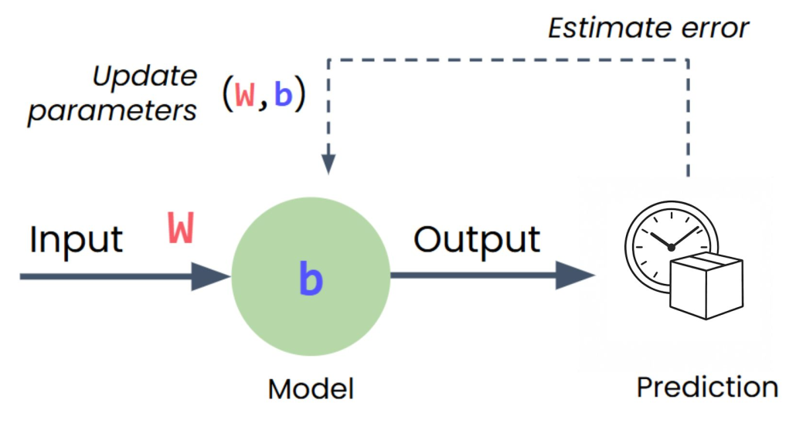
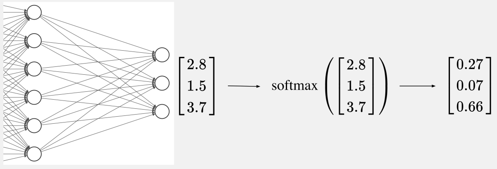

Build Neural Networks in PyTorch
PyTorch

PyTorch is an open-source deep learning framework designed to accelerate the path from research prototyping to production deployment. Originally developed by Meta’s AI Research lab (FAIR) and released in 2016, it is now governed by the PyTorch Foundation under the Linux Foundation.
Who uses PyTorch?

PyTorch across research and industry
- Meta, Tesla, Microsoft, OpenAI — research and production ML
- Tesla’s self-driving vision models run on PyTorch
- Also used beyond tech — e.g. computer vision on tractors in agriculture
Why they use it?
- Researchers love it — long the most-used framework on Papers With Code
- GPU acceleration handled behind the scenes
- You focus on data and algorithms; PyTorch makes it run fast
- Proven in production — Tesla, Meta, and more ship real products on it
Early Frameworks vs. PyTorch
🗿 Static Computational Graphs
- Must define and compile everything upfront
- No flexibility to change
- Cryptic error messages
- No standard Python debugging
🐍 Dynamic Computation
- Write clean Pythonic code
- Use normal loops and if statements
- Change anything, anytime
- Error messages point to your code
- Standard Python debugging
Simple. Pythonic. Powerful.
Building a Neural Network
We’ll start with the imports, then move through data preparation, model building, training, and making predictions.
Let’s see it in PyTorch code.
Imports
Tensors
Table of inputs and outputs:
| Distance (miles) | Time (minutes) |
|---|---|
| 2.0 | 11.9 |
| 3.0 | 15.3 |
| 4.0 | 18.8 |
| 5.0 | 22.2 |
Tensors are just n-dimensional arrays:
Tensors
Tensors are just n-dimensional arrays:
Tensors
Tensors are just n-dimensional arrays:
Tensors
Tensors are just n-dimensional arrays:
Tensors
Tensors are just n-dimensional arrays:
A Single Neuron Model in PyTorch
nn.Sequential(...): is for the default layer-after-layer neural network (we learn about non-sequential modules later)nn.Linear(1, 1): is a layer with the number of input variables, and output neurons
Inside nn.Linear(1, 1)
nn.Linear(1, 1) creates a learnable linear layer with 1 input feature and 1 output feature.
Internally, PyTorch creates:
- a weight matrix \(W\) with shape
(1, 1) - a bias shaped
(1)
The weight and bias start random — gradient descent will learn them.
Multi-variable Regression Neuron Model in PyTorch
- First argument = number of input features (here: 3)
- Second argument = number of output neurons (here: 1)
- The model learns one weight per feature plus a bias
Loss Function
A Loss Function estimates how far off model predictions are from the true data.
If you predict 45 minutes when it actually took 60, that’s a bigger error than predicting 58 minutes.
To “learn” is to minimize this loss.
For Regression we use \(MSE\) (Mean Squared Error):
\[ \text{MSE} = \frac{1}{n}\sum_{i=1}^{n}(y_i - \hat{y}_i)^2 \]
- \(y_i\): true value \(\hat{y}_i\): prediction
- Squaring penalizes large errors more
Optimizer
The Optimizer is the algorithm that figures out which direction to adjust your weight and bias to reduce that error.
SGD (Stochastic Gradient Descent) is one such method.
model.parameters()is how you access the model’s weights and biases in PyTorch.lr(learning rate): a hyper-parameter of SGD that controls the step size- Try
0.1,0.01, and0.001in the lab — watch how the loss decreases for each
The Training Loop

Each epoch is one full pass through training data:
Inspect Trained Parameters
After training, you can read what the model learned:
For a single-neuron delivery model, these are the slope and intercept of your best-fit line.
Inference (Prediction)
In reality, we first torch.no_grad() for faster inference, since gradient tracking was relevant during the training phase for the model to update its weights.
Classification Architecture
- Hidden layer learns useful combinations of the 2 inputs
- ReLU lets the model learn a non-linear decision boundary
- Output layer has 3 logits — one score per class
Cross Entropy Loss
For discrete labels we use Cross Entropy, not MSE:
\[ \hat{p}_c = \frac{e^{z_c}}{\sum_{j=1}^{C} e^{z_j}} \qquad \text{CE} = -\sum_{c=1}^{C} y_c \log(\hat{p}_c) \]
- \(z_c\): logits (raw model outputs)
- \(\hat{p}_c\): softmax probabilities
- \(y_c\): one-hot true class (equivalently: \(-\log \hat{p}_{\text{true}}\))
nn.CrossEntropyLoss
nn.CrossEntropyLoss applies softmax internally — do not add a softmax layer before it.

Same Training Loop
The training loop is unchanged — only the model and loss differ:
zero_grad → forward → loss → backward → step — same recipe for regression and classification.
Decision Boundaries
After training, visualize what the classifier learned by predicting on a grid:
You’ll build and compare these plots in the lab (e.g. more hidden neurons, different activations).